Opción 1Option 1
- GazpachoGazpacho
- Ceviche de atúnTuna ceviche
- Ensalada capreseCaprese salad
- Brocheta de camaronesShrimp skewer
- Quiche poblanoPoblano quiche
- Panna cotta de vainillaVanilla panna cotta
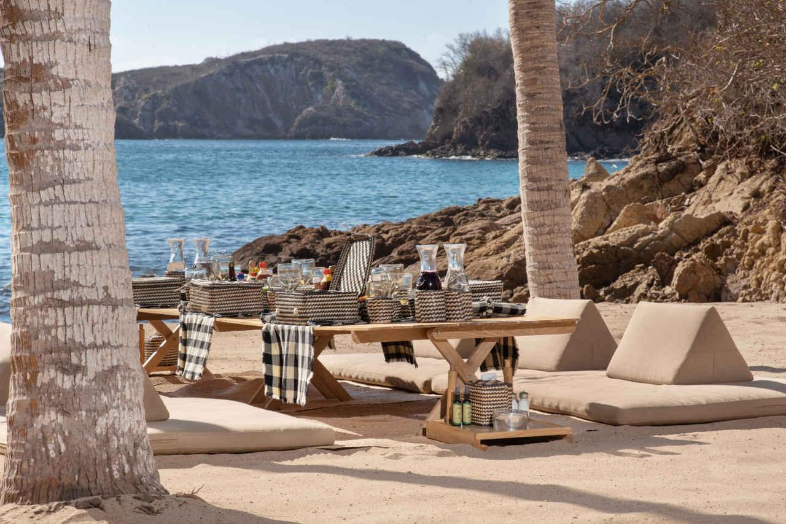
Picnic & gastronomíaPicnic & dining
En Casa Tauro la comida se vive donde tú quieras: en una playa solo para tu grupo, en el comedor con vista al mar o bajo las estrellas. Cocina mexicana e internacional con ingredientes locales y técnicas tradicionales.At Casa Tauro, food is enjoyed wherever you wish: on a beach just for your group, in the dining room overlooking the sea or under the stars. Mexican and international cuisine with local ingredients and traditional techniques.
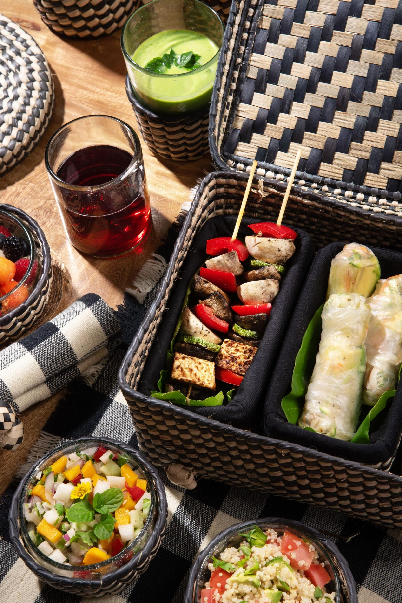
La experiencia insigniaThe signature experience
Una tarde entera en una de las playas exclusivas de Casa Tauro: mantas, cojines y sombra de palmeras, un menú de seis tiempos y el Pacífico enfrente. Llegas por tierra o, mejor aún, a bordo de nuestro barco.A whole afternoon on one of Casa Tauro’s exclusive beaches: blankets, cushions and palm shade, a six-course menu and the Pacific in front of you. Arrive by land or, even better, aboard our boat.
Seis propuestas para elegir una por grupo, o crea tu propio menú. Avísanos de cualquier alergia o dieta especial.Six proposals to choose one per group, or create your own menu. Let us know about any allergy or special diet.
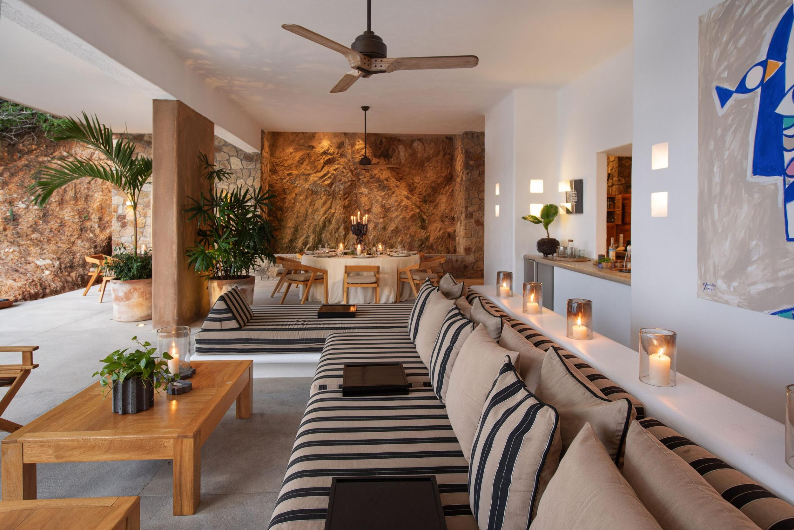
Elige un menú para cada comida de tu estancia, con propuestas que con gusto te sugerimos. Solo cuéntanos de cualquier restricción alimenticia y para cuántos comensales.Choose a menu for every meal of your stay, with proposals we are happy to suggest. Just tell us about any dietary restriction and how many guests it applies to.
El equipo de la casa hace las compras y las comidas se sirven en el comedor común con vista a la piscina y al mar. Los planes de alimentos requieren reservación previa.The house team does the shopping, and meals are served in the common dining room overlooking the pool and the sea. Meal plans require advance booking.
Montajes privados con menú personalizado para cada ocasión.Private set-ups with a personalized menu for every occasion.
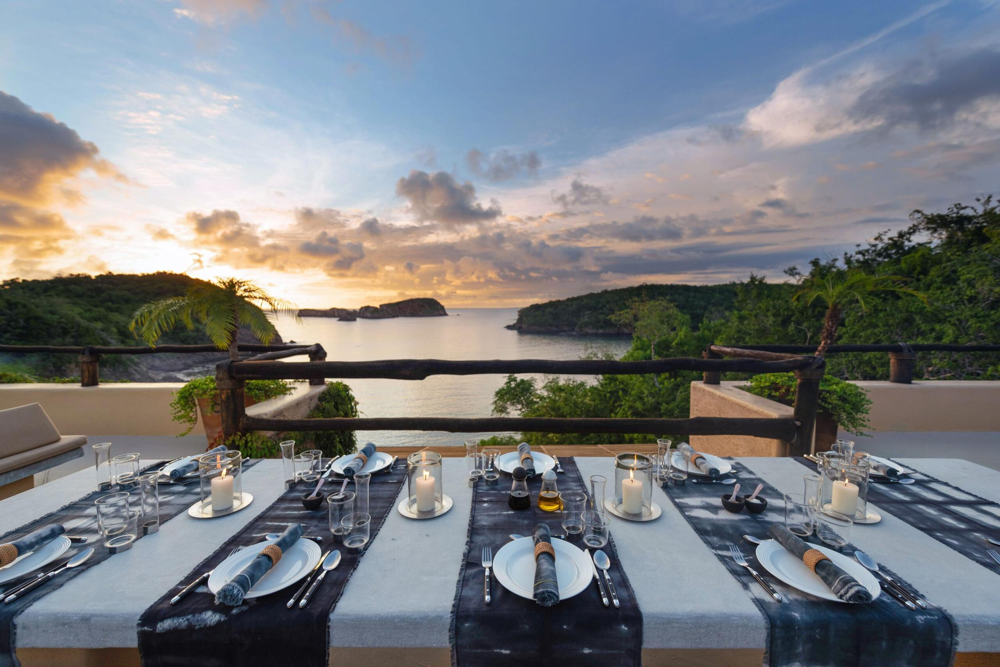
Atardecer, mesa vestida y noche de estrellas frente al mar: sopa de tortilla, parrillada de arrachera, brochetas y chiles rellenos. Mínimo 10 personas.Sunset, a dressed table and a starry night by the sea: tortilla soup, grilled arrachera, skewers and chiles rellenos. Minimum 10 guests.
Desde $2,800 MXN p/pFrom $2,800 MXN pp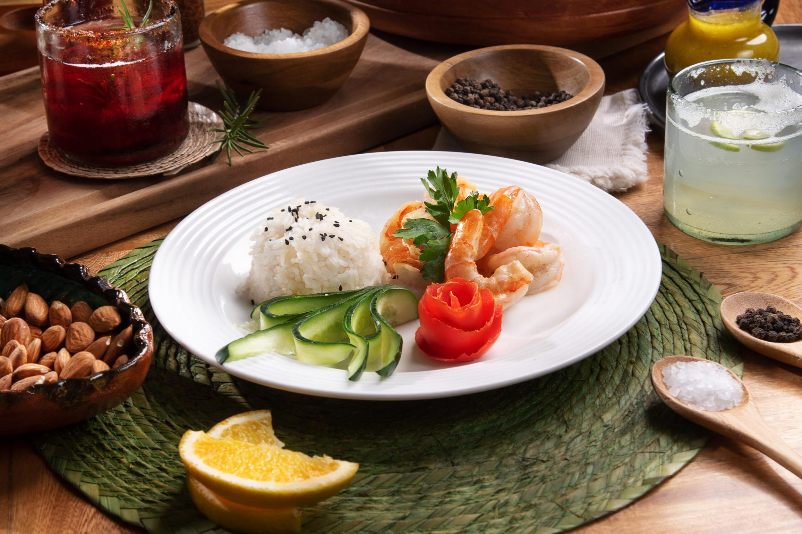
Una tarde de brasas en la arena: esquites, arrachera, chorizo argentino, brochetas de camarón y tacos de jaiba. Mínimo 6 personas.An afternoon of embers on the sand: esquites, arrachera, Argentine chorizo, shrimp skewers and soft-shell crab tacos. Minimum 6 guests.
Desde $2,150 MXN p/pFrom $2,150 MXN pp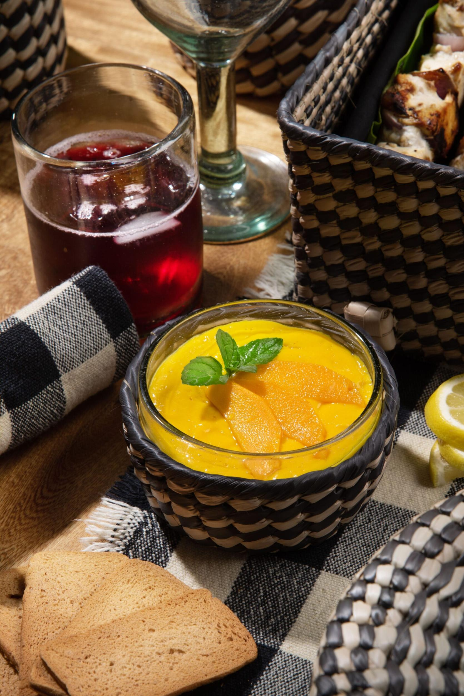
Omakase de 15 tiempos al estilo Edo Mae, preparado en la villa por dos chefs. Mínimo 8 personas, reservar con 5 días de anticipación.A 15-course Edo-Mae omakase prepared at the villa by two chefs. Minimum 8 guests, book 5 days ahead.
$3,000 MXN p/p$3,000 MXN pp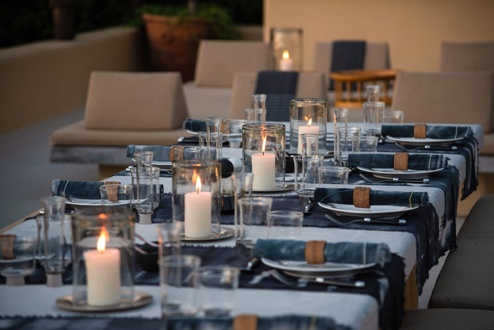
El asador de la parte alta de la casa, con las islas del Pacífico de horizonte. Incluido una vez por visita al rentar la casa completa.The grill at the top of the house, with the Pacific islands on the horizon. Included once per stay when renting the whole house.
Montaje adicional $2,500 MXNExtra set-up $2,500 MXN
Sillas alrededor del fuego, palmeras y el sonido de las olas para cerrar el día.Chairs around the fire, palm trees and the sound of the waves to close the day.
$2,500 MXN$2,500 MXN
Ambientación privada en la playa para una noche especial.A private beach setting for a special night.
$2,500 MXN$2,500 MXNPrecios en pesos mexicanos por persona salvo indicación. Se añade 15% de cargo por servicio; pagos con tarjeta o PayPal tienen 3.6% adicional. Todas las experiencias requieren reservación previa y están sujetas a disponibilidad. Transporte en barco: $3,000 MXN por hora (mínimo 2 horas).Prices in Mexican pesos per person unless stated. A 15% service charge is added; card or PayPal payments carry an extra 3.6%. All experiences require advance booking and are subject to availability. Boat transfer: $3,000 MXN per hour (2-hour minimum).
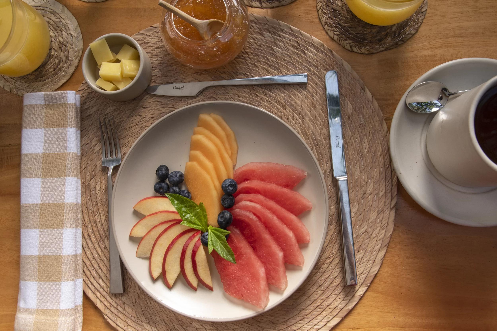
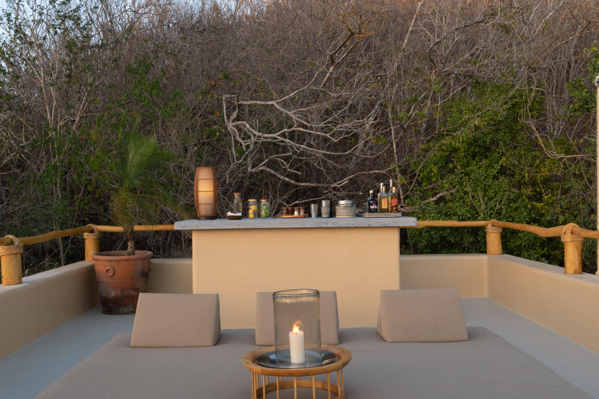
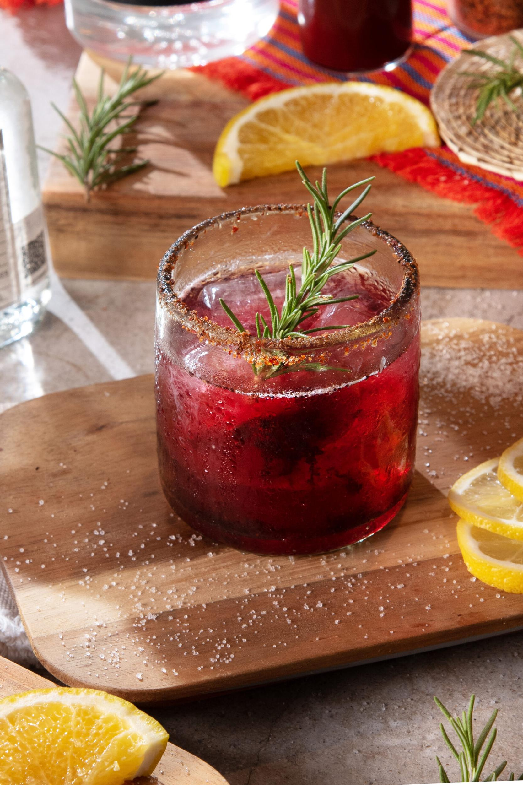
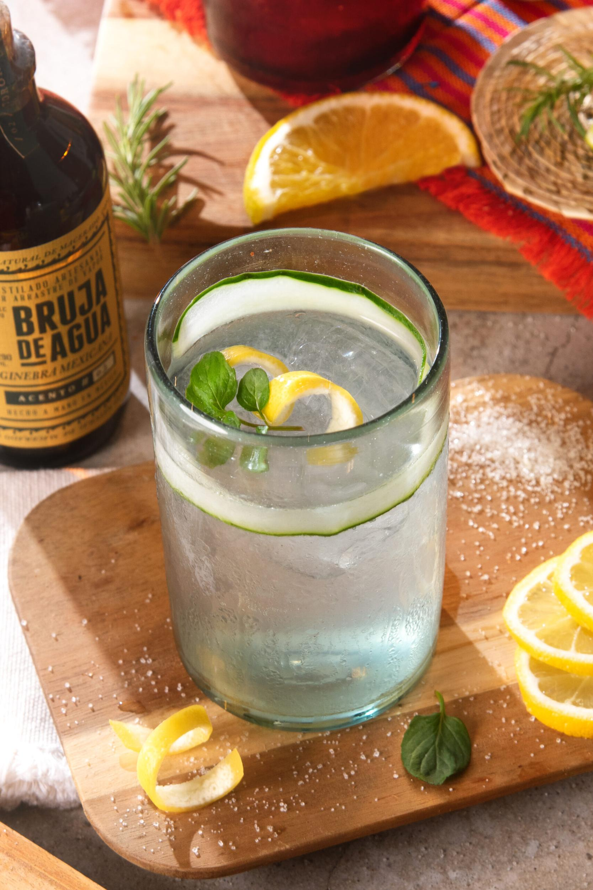